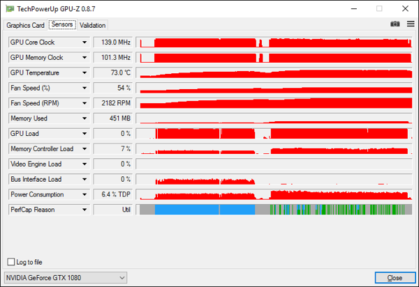

Одна из топовых моделей видеокарт на основе архитектуры nVidia Pascal. Предназначена для геймерских конфигураций премуим-класса (разрешения Full HD, Quad HD, Ultra HD) имеет сравнительно высокую стоимость, которая впрочем, оправдывается скоростью работы.
Эталонный кулер справлялся с тем, чтобы сохранять частоту Boost на уровне выше минимального. Производительность приведена ниже в разделе тестов.
Память:8 ГБ, GDDR5X, 10010 МГц
GPU:NVIDIA GeForce GTX 1080, 1721 МГц
Подключение:PCI-E v3.0
Разъемы:HDMI, DVI-D
Доп. разъемы:DisplayPort
Макс. разрешение:7680x4320 пикс
Питание:8 pin
Длина:280 мм
От стандартных карт с аналогичным чипсетом отличается фирменной системой охлаждения WindForce 3X, построенной на основе трех композитных тепловых трубок увеличенного диаметра с технологией прямого контакта, и приличным заводским разгоном. Мощности графического процессора GP104-400, лежащего в основе видеокарты Gigabyte GeForce GTX 1080 GV-N1080G1 GAMING-8GD достаточно для всех требовательных к графической составляющей игровых проектов 2016-2017 года выпуска при максимальных настройках графики в разрешениях 1920х1080, 2560х1440, а, зачастую, и в 3840х2160. Благодаря хорошему теплоотводу, имеет улучшенные оверклокерские способности, которыми можно воспользоваться в автоматическом или ручном режиме, с помощью многофункциональной программой Gigabyte Xtreme Engine Utility. Карта оснащена пятью современными цифровыми портами для подключения мониторов или телевизионных экранов (1хDVI-D, 1хHDMI 2.0b, 3хDisplayPort 1.4), доступны разрешения вплоть до 8К включительно (7680x4320 при 60Hz).
«Все права защищены»